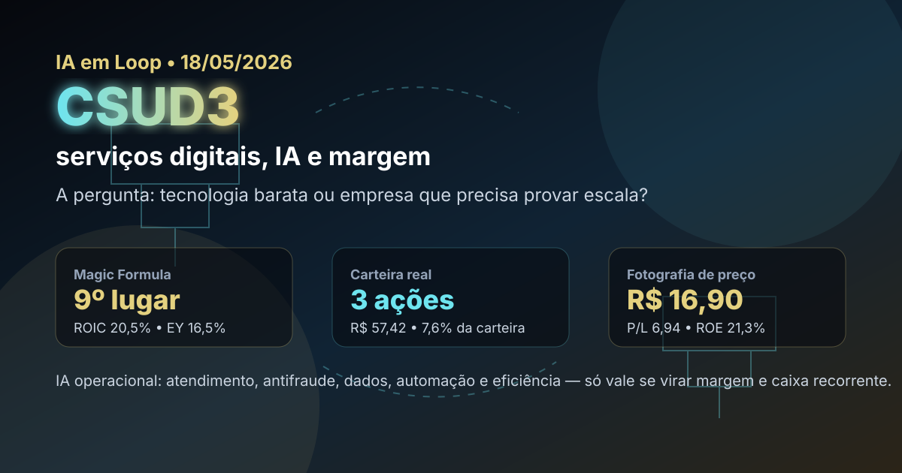

18/05: CSUD3, serviços digitais e IA que precisa aparecer na margem
Depois de passar por seguros, construção, saúde, mineração, petróleo e autopeças, a leitura de hoje vai para um nome menor e já presente na carteira real da Magic Formula: CSUD3. A pergunta é direta: é tecnologia barata ou uma empresa de serviços digitais que ainda precisa provar escala, recorrência e ganho de margem?

Leitura visual: CSUD3 combina múltiplo baixo, retorno sobre capital razoável e exposição a automação digital; a tese só melhora se IA aparecer como eficiência, retenção e margem, não como narrativa genérica.
O sinal do dia
A escolha de CSUD3 evita repetir os últimos tickers analisados e traz uma tese diferente para a sequência: serviços digitais, processamento, atendimento, dados e automação. No ranking Magic Formula de maio do IA em Loop, CSUD3 aparece em 9º lugar, com ROIC de 20,5%, earnings yield de 16,5%, EV/EBIT de 6,06 e score 43.
A fotografia de mercado também conversa com o momento macro. Com Selic elevada e CDI diário ainda forte, ações pequenas precisam entregar prêmio claro sobre a renda fixa. Na consulta desta manhã, o dólar estava perto de R$ 5,03, o CDI mais recente divulgado pelo Banco Central marcava 0,0534% ao dia e o IPCA de abril estava em 0,67%. Ou seja: o custo de oportunidade continua alto.
Resposta curta: CSUD3 parece mais “empresa barata que precisa provar escala” do que “tecnologia óbvia para comprar a qualquer preço”. O ranking coloca o ativo no radar, a carteira real já tem uma posição pequena, mas o aumento de exposição depende de evidência de margem, caixa recorrente e retenção de clientes.
Por que CSUD3 hoje?
A carteira real da Magic Formula já possui 3 ações de CSUD3, com custo de R$ 19,14 por ação, valor comprado de R$ 57,42 e peso aproximado de 7,6% na carteira. Isso torna a análise menos abstrata: não é só um ticker de ranking, é uma posição pequena que precisa ser acompanhada com disciplina.
Em consulta ao Fundamentus feita em 18/05, CSUD3 aparecia a R$ 16,90, com P/L de 6,94, P/VP de 1,48, PSR de 1,10, margem EBIT de 16,2%, ROIC de 15,5% e ROE de 21,3%. O conjunto é interessante porque combina lucro barato e retorno aceitável, mas não dispensa a pergunta principal: esse retorno é sustentável em uma empresa menor e menos líquida?
| Item | Leitura verificada | Implicação |
|---|---|---|
| Ranking | 9º na Magic Formula de maio | Entra no radar por qualidade/preço, sem ser o topo óbvio já repetido |
| Carteira real | 3 ações; R$ 57,42; 7,6% da carteira Magic Formula | Posição pequena, adequada para acompanhamento antes de aumentar peso |
| Valuation | P/L 6,94; P/VP 1,48; PSR 1,10 | Preço parece descontado, mas exige prova de lucro recorrente |
| Rentabilidade | ROIC 20,5% no ranking; 15,5% no Fundamentus; ROE 21,3% | Retorno bom, porém abaixo de nomes de qualidade mais evidente |
| Macro | Dólar perto de R$ 5,03; CDI diário 0,0534% | Pequenas empresas competem contra uma renda fixa ainda exigente |
A tese: tecnologia barata ou serviço com execução?
CSUD3 não deve ser analisada como uma “big tech brasileira”. A leitura correta é mais pé no chão: uma empresa de serviços digitais que precisa transformar automação, dados, experiência do cliente, meios de pagamento e eficiência operacional em contratos resilientes, margem e caixa. O termo tecnologia só importa se virar resultado operacional mensurável.
Isso responde à pergunta do título. Hoje, CSUD3 é uma tese de execução barata, não uma tese de tecnologia óbvia. O preço baixo ajuda, mas o investidor precisa confirmar se a empresa consegue crescer sem sacrificar margem, renovar contratos, proteger receita recorrente e usar IA para reduzir custo de atendimento, fraude, retrabalho e churn.
Pontos positivos
Múltiplo de lucro baixo, P/VP moderado, ROE acima de 20%, presença no ranking Magic Formula e peso real ainda pequeno, o que reduz risco de concentração.
Riscos
Baixa liquidez relativa, dependência de contratos corporativos, pressão competitiva em tecnologia/serviços, necessidade constante de investimento e risco de margem se crescimento vier com preço agressivo.
Onde a IA ajuda
Atendimento automatizado, classificação de demandas, antifraude, análise de dados de clientes, cobrança, roteamento de operações e redução de custos repetitivos.
Onde a IA engana
Se aparecer apenas em apresentações, sem queda de despesa, melhora de margem EBIT, retenção, crescimento de receita por cliente ou geração de caixa, é narrativa sem valor para o acionista.
Compra, venda ou espera?
Pelos critérios do IA em Loop, CSUD3 fica como manutenção com compra apenas em reforço pequeno e condicionado. A posição atual já cumpre o papel de acompanhar uma small cap barata de serviços digitais dentro da Magic Formula. Aumentar peso só faz sentido se a empresa mostrar, nos próximos números, que a margem não é acidental e que a tese de automação melhora caixa.
- Gatilho de compra: margem EBIT sustentada ou crescente, caixa operacional positivo, renovação de contratos relevantes e sinal claro de escala sem deterioração de preço.
- Gatilho de espera: lucro barato, mas sem confirmação de caixa, liquidez baixa demais para ampliar posição, ou ação subindo sem melhora operacional.
- Gatilho de venda/redução: perda de contrato importante, queda persistente de margem, aumento de dívida para sustentar crescimento, ou tese de IA sem efeito nos indicadores.
O que isso muda na carteira
Na carteira real, CSUD3 deve continuar como posição pequena e monitorável. O ativo ajuda a diversificar a Magic Formula para tecnologia/serviços, mas não substitui empresas mais líquidas nem deve virar aposta concentrada só porque o P/L parece baixo.
A disciplina prática é comparar CSUD3 com outros nomes da carteira e do ranking: se o mercado oferece qualidade mais líquida com retorno parecido, o desconto precisa ser grande. Se CSUD3 provar margem, caixa e contratos, o desconto vira oportunidade. Se não provar, o desconto pode ser apenas reflexo do risco.
Checklist antes de agir
- Ler o release e demonstrações mais recentes, separando crescimento recorrente de efeitos pontuais.
- Conferir caixa operacional, margem EBIT, dívida, concentração de clientes e renovação de contratos.
- Verificar liquidez média antes de qualquer ordem maior; small caps exigem mais cuidado no preço-limite.
- Comparar o retorno esperado com CDI/Selic: com juros altos, “barato” precisa ser barato o bastante.
- Usar R$ 16,90 apenas como fotografia de consulta; preço de execução deve ser validado no home broker/B3.